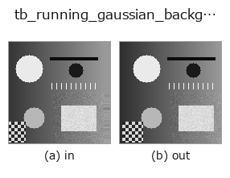
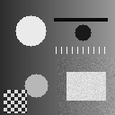

typed op• Data kinds: video → video
• Call: fullseye.apply(img, "tb_running_gaussian_background", a=0.5, b=0.5) (2-D model = एक image + दो scalar knobs a,b∈[0,1])

*Figure synthetic 128×128 input पर सच में चलाकर मिला output है। बाईं ओर input, दाईं ओर output। Point clouds ऊपर से देखे गए scatter के रूप में (brightness = z), 1-D series line के रूप में, volumes z दिशा में maximum-intensity projection के रूप में, videos बीच के frame के रूप में, complex images amplitude के रूप में, और जो return values चित्र नहीं बन सकते वे स्वयं values के रूप में दिखाए जाते हैं।*
Knob a को बदलकर (0.1 / 0.5 / 0.9, दूसरा knob default पर):
▸ tb_running_gaussian_background: knob a को बदलने का figure (docs site)
Knob b को बदलकर (0.1 / 0.5 / 0.9, दूसरा knob default पर):
▸ tb_running_gaussian_background: knob b को बदलने का figure (docs site)
Stages (पहले आने वाले ops → यह op, बाएँ से क्रम में):
▸ tb_running_gaussian_background: stages का figure (docs site)
दूसरी images पर भी (synthetic scene / photo / coins। ऊपर की row में inputs, नीचे की row में उनके outputs। Knobs default पर):
▸ tb_running_gaussian_background: दूसरी images पर output (docs site)
Motion (GIF: frames / views / slices क्रम से। स्थिर figure ही पूरा रूप है, GIF सहायक है):

हर frame के लिए adaptive single-Gaussian background (running mean) → (T, H, W) (video)।
हर pixel के लिए mean mean और variance var रखने वाला single Gaussian background (Wren का Pfinder) चलाया जाता है, और हर frame के बाद का mean लौटाया जाता है। foreground की जाँच (frame - mean)^2 > k^2 var है। selective=True (default) में foreground माने गए pixel के mean / var update नहीं होते, इसलिए धीरे चलने वाली वस्तुएँ background में नहीं घुलतीं। update सूत्र mean += α diff, var += α (diff^2 - var) हैं, और var की निचली सीमा 1e-4 है।
• video: (T, H, W) array या 2-D frame की list। integer को अधिकतम मान से [0, 1] में normalise, float को clip किया जाता है। NaN/Inf पर ValueError।
• alpha: [0, 1] की learning rate। default 0.02 (time constant लगभग 50 frame)।
• k: [0, 100]। foreground मानने के लिए standard deviation का गुणक। default 2.5।
• var_init: [1e-9, 1]। पहले frame पर variance का प्रारंभिक मान ([0, 1] intensity का square)। बहुत छोटा हो तो 2 वें frame से सभी pixel foreground बन जाते हैं, और selective से update रुक जाता है।
• selective: foreground pixel का update रोकना है या नहीं। False पर सभी pixel हमेशा update होते हैं।
• return value: (T, H, W) float64। t = 0 पहला frame ही है।
• विफलता: ValueError (shape, dtype, हर range)।
उसी model का foreground mask running_gaussian_foreground है (समान argument के साथ जोड़ी बनाने पर हर frame में संगत रहता है)।
2-D evolution registry में bridge किया गया videostream का op running_gaussian_background। implementation वही है; केवल calling convention को op(v, a, b) के अनुरूप किया गया है। a से alpha (default 0.02) और b से k (default 2.5) बदला जाता है।
• Sample data catalog (DL URL / license) — 2-D के लिए skimage.data (BSD/public) + synthetic, 3-D के लिए real data sources (Stanford/PDS आदि) के DL URL।
• Operators का स्रोत और संदर्भ — इस op family के मूल research/methods के स्रोत।
नीचे का program सच में चलता है, यह जाँचा गया है (figure वाला ही input)। Studio की help में यह block buttons बन जाता है, जिनसे इसे वहीं load करके चलाया जा सकता है।
img_to_video 0.50 0.50 tb_running_gaussian_background 0.50 0.50
▸ यह pipeline load करें · Load करके चलाएँ
नीचे के उदाहरण मूल ledger op running_gaussian_background को call करते हैं। यह bridge op वही implementation है, बस fn(v, a, b) convention के अनुसार ढाला गया है, इसलिए व्यवहार वैसा ही लागू होता है (केवल call का रूप अलग है)।
• video_streaming — py -3.11 examples/video_streaming.py
video को input के रूप में लेते हैं)identity · tb_temporal_bandpass · tb_temporal_band_power · tb_temporal_median_window · tb_moving_average_window · tb_background_subtraction_window · tb_frame_difference_causal · tb_exponential_background
typed)tb_points_to_voxel · tb_estimate_point_normals · tb_iss_keypoints · tb_project_points · tb_render_point_depth · tb_statistical_outlier_removal · tb_radius_outlier_removal · tb_voxel_grid_downsample
*Provenance: ops.py — 2D operator registry. यह per-op note tools/opdocs.py md से अपने-आप generate होता है (हाथ से edit न करें)।*
© 2026 Kazufumi Furuse — Fullseye operator documentation. Licensed under Apache-2.0.